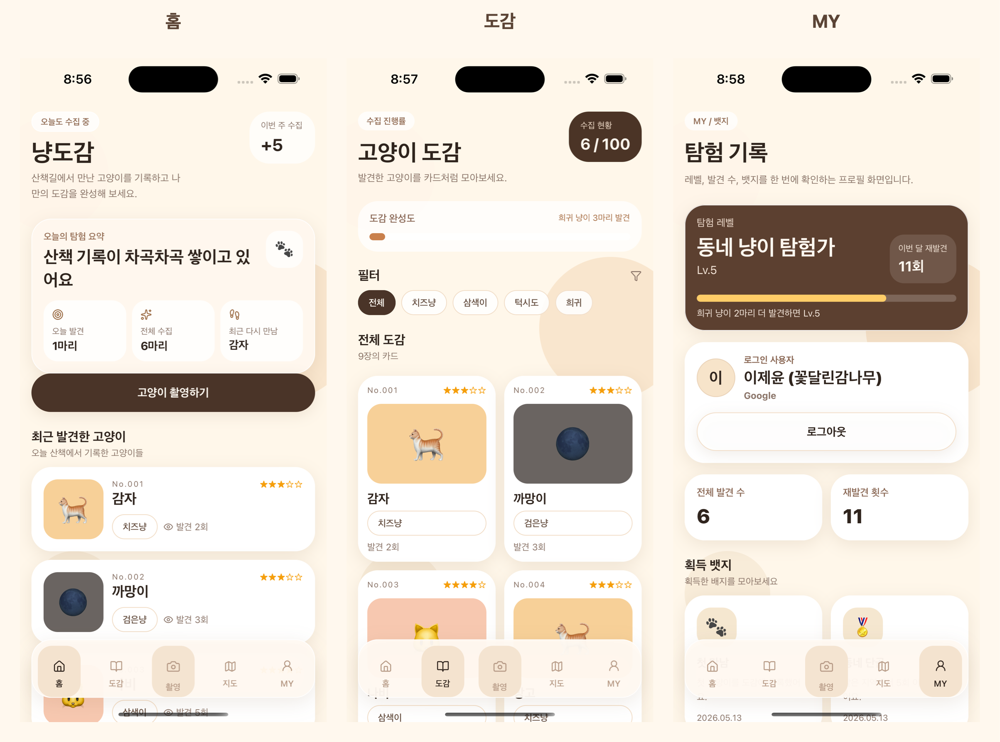

이번 주 발견 기록
최근 수집 흐름을 홈에서 바로 확인하고 다음 산책의 목표를 잡습니다.
냥도감은 단순한 사진첩이 아니라 발견 장소, 성격 태그, 재발견 기록을 함께 쌓는 고양이 탐험 기록장입니다.

최근 수집 흐름을 홈에서 바로 확인하고 다음 산책의 목표를 잡습니다.
치즈냥, 턱시도냥, 삼색이처럼 외형과 별명을 묶어 나만의 도감으로 정리합니다.
다시 만난 날짜와 장소 단서를 남겨 익숙한 골목 친구의 생활 반경을 기억합니다.
지역별 기록과 미확인 제보 힌트를 따라 걷다 보면, 평소 지나치던 골목이 새로운 발견 장소가 됩니다.
고양이를 만나면 사진과 특징을 남기고, 품종보다 관찰 가능한 외형 중심으로 기록합니다.
지도에서 지역별 흔적을 확인하고, 정확한 좌표 대신 안전한 범위 정보로만 탐험을 이어갑니다.
도감 완성도, 뱃지, 재발견 횟수가 쌓이며 동네 고양이 생태가 개인 기록으로 남습니다.
홈, 도감, 마이페이지가 고양이 수집 흐름에 맞게 이어집니다.

